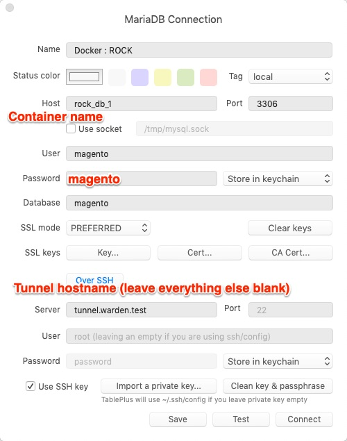
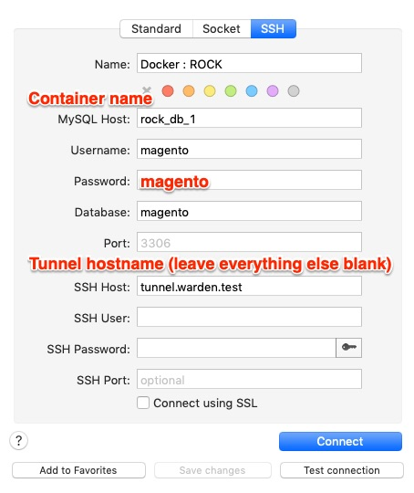
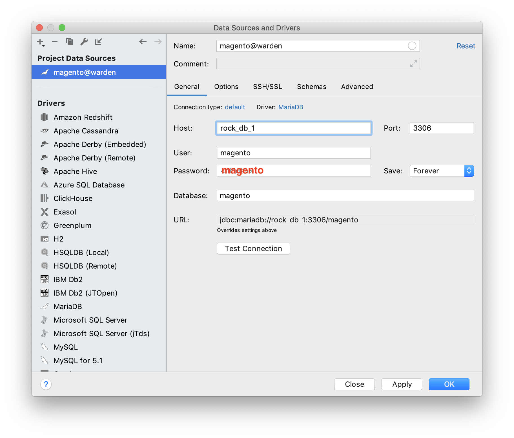
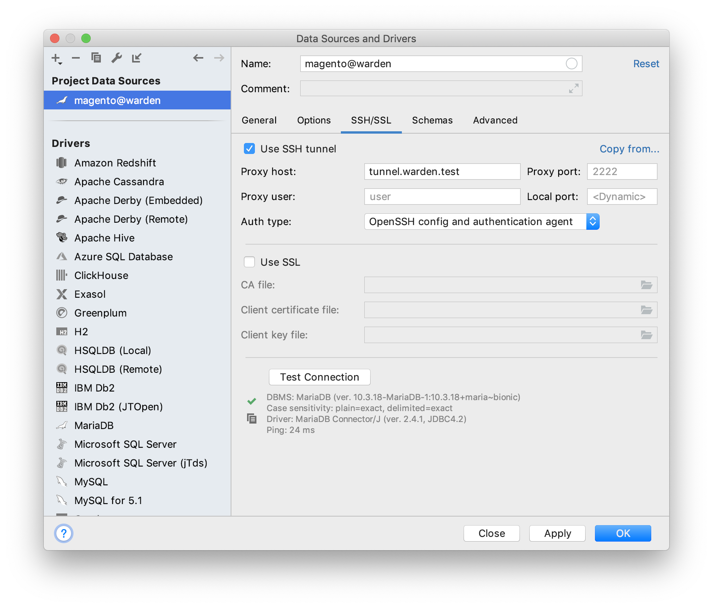
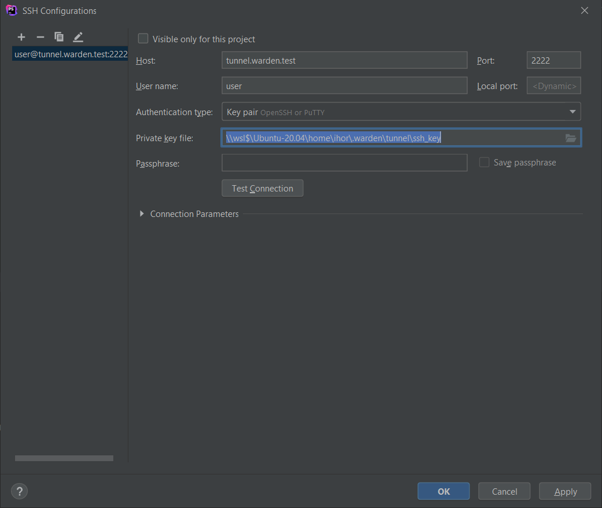
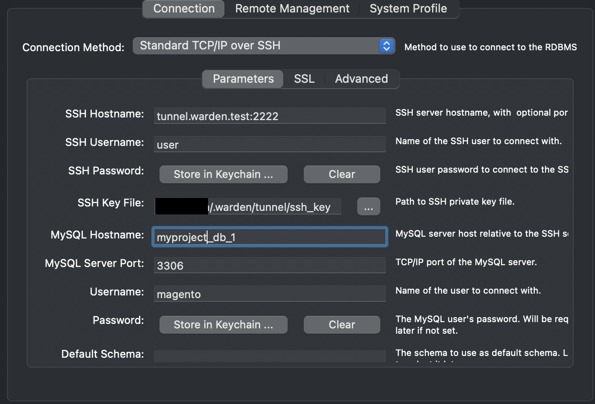
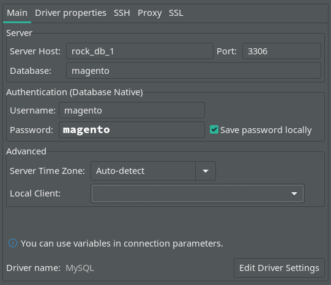
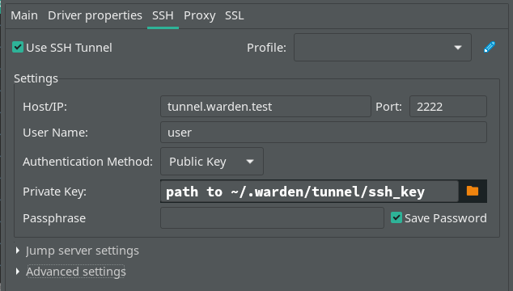

Database Connections
Common Settings
| Name | Value/Description |
|---|---|
| MySQL Host | Name of your Docker Container, can be found with warden env ps |
| MySQL Port | 3306 |
| MySQL User | magento |
| MySQL Password | magento |
| MySQL Database | magento |
| SSH Host, Proxy Host, Server | tunnel.warden.test |
| SSH Host Port | 2222 |
| SSH User | user |
| SSH private key file | ~/.warden/tunnel/ssh_key |
TablePlus

Sequel Pro / Sequel Ace

PhpStorm
  
MySQL Workbench

DBeaver
 